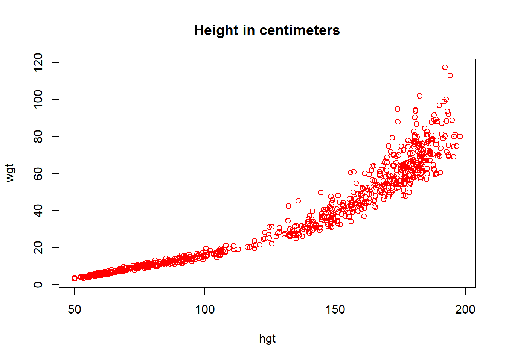
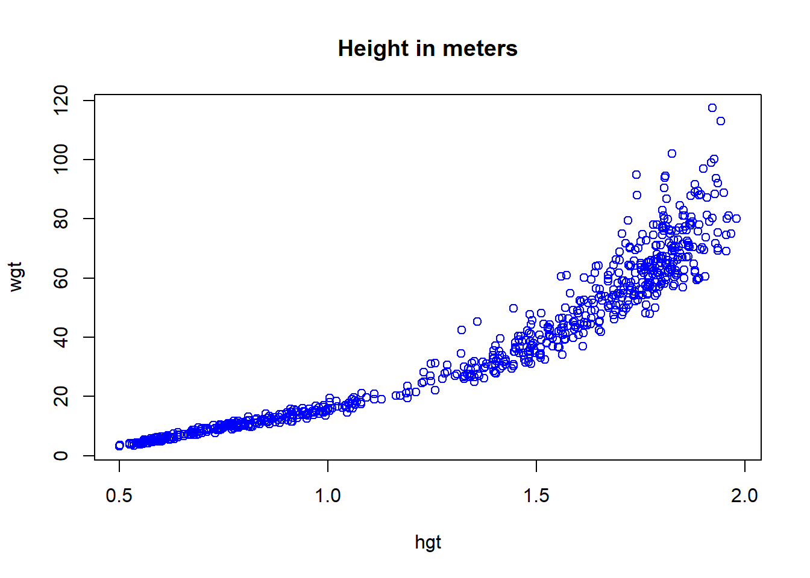

Practical C
Gerko Vink
Statistical Programming with R
Exercises
The following packages are required for this practical:
library(dplyr)
library(magrittr)
library(mice)and if you’d like the same results as I have obtained, you can fix the random seed
set.seed(123)- Use a pipe to do the following:
- draw 1000 values from a normal distribution with
mean = 5andsd = 1- \(N(5, 1)\), - create a matrix where the first 500 values are the first column and the second 500 values are the second column **
- make a scatterplot of these two columns
rnorm(1000, 5) %>%
matrix(ncol = 2) %>%
plot()
- Use a pipe to calculate the correlation matrix on the
anscombedata set.
anscombe %>%
cor()## x1 x2 x3 x4 y1 y2 y3
## x1 1.0000000 1.0000000 1.0000000 -0.5000000 0.8164205 0.8162365 0.8162867
## x2 1.0000000 1.0000000 1.0000000 -0.5000000 0.8164205 0.8162365 0.8162867
## x3 1.0000000 1.0000000 1.0000000 -0.5000000 0.8164205 0.8162365 0.8162867
## x4 -0.5000000 -0.5000000 -0.5000000 1.0000000 -0.5290927 -0.7184365 -0.3446610
## y1 0.8164205 0.8164205 0.8164205 -0.5290927 1.0000000 0.7500054 0.4687167
## y2 0.8162365 0.8162365 0.8162365 -0.7184365 0.7500054 1.0000000 0.5879193
## y3 0.8162867 0.8162867 0.8162867 -0.3446610 0.4687167 0.5879193 1.0000000
## y4 -0.3140467 -0.3140467 -0.3140467 0.8165214 -0.4891162 -0.4780949 -0.1554718
## y4
## x1 -0.3140467
## x2 -0.3140467
## x3 -0.3140467
## x4 0.8165214
## y1 -0.4891162
## y2 -0.4780949
## y3 -0.1554718
## y4 1.0000000- Now use a pipe to calculate the correlation for the pair
(
x4,y4) on theanscombedata set.
Using the standard %>% pipe:
anscombe %>%
subset(select = c(x4, y4)) %>%
cor()## x4 y4
## x4 1.0000000 0.8165214
## y4 0.8165214 1.0000000Alternatively, we can use the %$% pipe from package
magrittr to make this process much more efficient.
anscombe %$%
cor(x4, y4)## [1] 0.8165214- Use a pipe to calculate the correlation between
hgtandwgtin theboysdata set from packagemice.
Because boys has missings values for almost all
variables, we must first select wgt and hgt
and then omit the rows that have missing values, before we can calculate
the correlation. Using the standard %>% pipe, this would
look like:
boys %>%
subset(select = c("wgt", "hgt")) %>%
cor(use = "pairwise.complete.obs")## wgt hgt
## wgt 1.0000000 0.9428906
## hgt 0.9428906 1.0000000which is equivalent to
boys %>%
subset(select = c("wgt", "hgt")) %>%
na.omit() %>%
cor()## wgt hgt
## wgt 1.0000000 0.9428906
## hgt 0.9428906 1.0000000Alternatively, we can use the %$% pipe:
boys %$%
cor(hgt, wgt, use = "pairwise.complete.obs")## [1] 0.9428906The %$% pipe unfolds the listed dimensions of
the boys dataset, such that we can refer to them
directly.
- In the
boysdata set,hgtis recorded in centimeters. Use a pipe to transformhgtin theboysdataset to height in meters and verify the transformation.
Using the standard %>% and the %$%
pipes:
boys %>%
transform(hgt = hgt / 100) %$%
mean(hgt, na.rm = TRUE)## [1] 1.321518- Use a pipe to plot the pair (
hgt,wgt) two times: once forhgtin meters and once forhgtin centimeters. Make the points in the ‘centimeter’ plotredand in the ‘meter’ plotblue.
This is best done with the %T>% pipe:
boys %>%
subset(select = c(hgt, wgt)) %T>%
plot(col = "red", main = "Height in centimeters") %>%
transform(hgt = hgt / 100) %>%
plot(col = "blue", main = "Height in meters")
The %T>% pipe is very useful, because it creates a
literal T junction in the pipe. It is perhaps most
informative to graphically represent the above pipe as follows:
boys %>%
subset(select = c(hgt, wgt)) %T>%
plot(col = "red", main = "Height in centimeters") %>%
transform(hgt = hgt / 100) %>%
plot(col = "blue", main = "Height in meters")
We can see that there is indeed a literal T-junction. Naturally, we
can expand this process with more %T>% pipes. However,
once a pipe gets too long or too complicated, it is perhaps more useful
to cut the piped problem into smaller, manageble pieces.
End of Practical